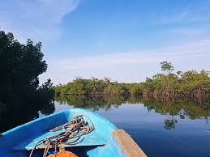
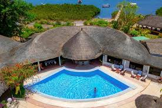
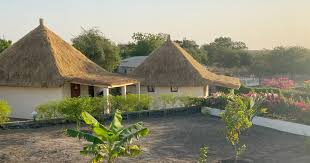
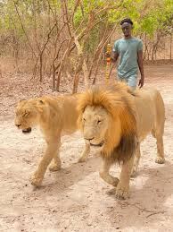
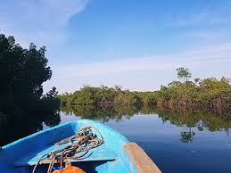
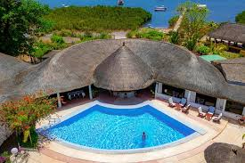
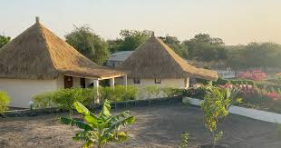
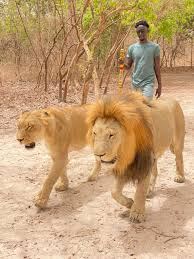

Toubacouta, un village situé dans le delta du Sine-Saloum, connu pour l'écotourisme. C'est à la fois un village et une commune rurale qui s'étend sur 170 km² et compte 52 villages officiels. La région est réputée pour sa beauté naturelle, ses mangroves, ses bolongs (bras de mer) et ses îles, classées au patrimoine mondial de l'UNESCO. C'est une destination privilégiée pour l'écotourisme, l'observation des oiseaux et la découverte de l'artisanat local.L'économie locale est largement portée par l'écotourisme et les activités traditionnelles comme la pêche et la transformation de l'arachide.


 







| lieux à visité | description |
|---|---|
| place de france | la mangroves |
| lieux touristique | la creveticulture |
| réserve de fathala | le delta du saloum en pirogue |
| centre d'interpelation du delta du saloum | pique-nique sur l'ile de sipo |